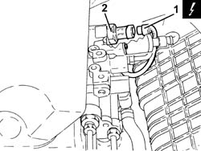

2127E50 hydraulic selection gearbox circuit pressure sensor - r r
- Path
- Procedures > 21 GEARBOX > 2127 ELECTRO-HYDRAULIC SELECTION. GEARBOX EXTERNAL. CONTROLS > 2127E electric speed selection system > 2127E50 hydraulic selection gearbox circuit pressure sensor - r r
- Kind
- repair procedure (removal / refitting; the operation number is the code)
- Applies to
- engines: 3.2 V6; all production periods
- Interactive page
- https://sloeber94.github.io/elrnDB-a147/en/#/3025175
Applies to: engines: 3.2 V6; all production periods; only with equipment: Cambio robotizzato
 Removing
Removing
 Refitting
RefittingPosition the vehicle on the ramp
Connect the Examiner diagnostic equipment.
Select 'Alfa 147 speed' on the Examiner.
Select 'Control Unit Test' on the Examiner and select the 'Marelli Selespeed Automatic Transmission'.
Press 'Active Diagnosis' on the Examiner and select 'Accumulator depressurizing'.
Continue with the procedure on the Examiner.
Ensure that the ignition key is in the OFF position, then disconnect the negative battery terminal (-).
 | Name | Connector |
|---|---|---|
- | Battery |
Proceed with removal. 7055B54 under-engine guard - r r
1. Disconnect the electrical connection from the electro-hydraulic gear selection hydraulic circuit pressure sensor.
| Name | Connector |
|---|---|---|
1 | Pressure sensor on transmission |
2. Undo and remove the electro-hydrauilc gear selection hydraulic circuit pressure sensor.

Applies to: engines: 3.2 V6; all production periods; only with equipment: Cambio robotizzato
Refitting
RemovingPlace the electro-hydraulic gear selection hydraulic circuit pressure sensor back in its housing and tighten it.
Connect the electrical connection to the electro-hydraulic gear selection hydraulic circuit pressure sensor.
.Proceed with refitting 0010T47 hydraulic system fluid for gearbox with hydraulic selection check level and top up if necessary .
.Proceed with refitting 0010T48 hydraulic system for gearbox with hydraulic selection bleed air .
.Proceed with refitting 7055B54 under-engine guard - r r .
Remove the car from the ramps.